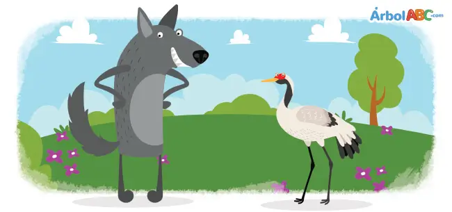

La Leyenda de la Atlantida
La leyenda de la Atlántida es uno de los relatos más conocidos de la historia humana, transmitido por primera vez por el filósofo griego Platón en sus diálogos Timeo y Critias. Según la narración, esta colosal isla albergaba una civilización increíblemente avanzada, rica y poderosa, protegida por el dios Poseidón. Sus habitantes construyeron templos cubiertos de oro, canales concéntricos perfectos y una flota naval que dominaba los mares de la época, convirtiéndose en el imperio más próspero del mundo antiguo.
Sin embargo, a medida que el poder de los atlantes crecía, también lo hacía su avaricia y soberbia, lo que desató la furia de los dioses olímpicos. Como castigo por su corrupción moral, Zeus y las deidades enviaron una serie de violentos terremotos e inundaciones mas ivas en un solo día y una noche de desgracia. La magnífica isla de la Atlántida se hundió por completo en las profundidades del océano, desapareciendo para siempre y dejando tras de sí un misterio arqueológico que ha cautivado a exploradores y pensadores durante milenios.


Los tres chanchitos querían casas propias, así que cada uno construyó la suya: uno de paja, otro de madera y el tercero de ladrillos. El lobo feroz llegó y sopló la casa de paja, que cayó enseguida. Luego sopló la de madera, que también se derrumbó. Los dos chanchitos corrieron a la casa de ladrillos, y aunque el lobo sopló con todas sus fuerzas, no pudo destruirla. Intentó entrar por la chimenea, pero los chanchitos tenían un fuego encendido, así que el lobo salió huyendo. Al final, los tres aprendieron que el esfuerzo y la paciencia dan mejores resultados.
Había una vez un león muy fiero que dormía plácidamente bajo un árbol en la selva. De pronto, un pequeño ratón empezó a correr sobre su melena, despertándolo de mal humor. El león, furioso, atrapó al ratón con su enorme pata y estuvo a punto de comérselo. "¡Por favor, perdóname la vida!", suplicó el ratón, "¡prometo que algún día podría ayudarte!". El gran león se rió a carcajadas de esa idea tan absurda, pero decidió dejarlo ir. Días después, el león cayó en una trampa de cazadores y quedó atrapado en una red. Rugió con tanta fuerza por la desesperación que el bosque entero tembló de miedo. El ratoncito escuchó los rugidos a lo lejos y corrió rápidamente para intentar ayudarlo. Con sus diminutos pero afilados dientes, royó las cuerdas de la red hasta liberar al felino. Desde ese día, el majestuoso león y el pequeño ratón se convirtieron en los mejores amigos.

Soldadito De Plomo: Había una vez veinticinco soldados de juguete fabricados con una vieja cuchara de plomo. El último de ellos tenía una sola pierna porque el metal no alcanzó para terminarlo. En su hogar se enamoró de una hermosa bailarina de papel que vivía en un gran castillo.+ Un duendecillo celoso de una caja de sorpresas lo amenazó para que no la mirara más. Al día siguiente, el soldado cayó por la ventana y unos niños lo subieron a un barco de papel. Navegó por una peligrosa alcantarilla oscura, donde por suerte logró esquivar a una enorme rata. El barco se hundió en el canal y un pez gigante se tragó de inmediato al indefenso soldado. El pez fue pescado y la cocinera de la misma casa lo compró y lo abrió en la cocina. Al regresar a la habitación, un niño lo arrojó al fuego de la chimenea sin motivo alguno. El viento empujó también a la bailarina hacia las llamas, uniéndolos para siempre en el fuego.
Hola, soy Angelo Lira
El viento soplaba con fuerza en el Valle del Silencio, un rastro borroso entre las colinas de Aria. Allí vivía Liam, un joven tejedor que poseía un don extraordinario: podía atrapar los suspiros de las personas y transformarlos en hilos de plata brillante. Cada noche, Liam subía a la colina más alta con su rueca de madera. Buscaba los anhelos perdidos que flotaban en el aire frío. Una madrugada, encontró un suspiro dorado y pesado, lleno de una profunda melancolía. Pertenecía a la Luna, que se sentía sola en la inmensidad del cielo oscuro. Con paciencia, el joven tejió una bufanda estelar y la lanzó al firmamento. Desde entonces, la Luna brilla con más calidez, agradecida por el abrigo de su amigo.
Video de youtubeHISTORIA
Un día como cualquier otro, un joven y fornido lobo sintió cómo su garganta se atoraba con el pequeño hueso de una de sus presas. Viéndose en la más precaria situación, comenzó a aullar con lo poco que le quedaba de aliento: —¡Socorro, auxilio! Ayúdame y serás recompensado. Los animales del bosque ignoraron las palabras del lobo ya que todos sabían que él no era de fiar. Sin embargo, una grulla incauta que caminaba por ahí escuchó sus lamentos y decidió ayudarlo. Con su largo y delgado pico, entró en la garganta del lobo y luego de haber extraído el hueso, exigió el pago prometido. Sin embargo, el lobo sonriendo y rechinando sus dientes, exclamó: —¿Qué es lo que me pides? Te aseguro que ya tienes la recompensa que te mereces al haber metido tu cabeza en la boca de un lobo y haber seguido con vida.
Moraleja: Cuando sirves a los malos de corazón, no esperes recompensa. Agradece si escapas de las consecuencias de tus acciones.
